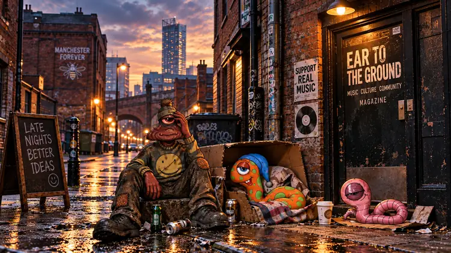

A familiar feeling. A few fragments. Nothing quite in focus.

Music. Lights. People. A feeling that something here is familiar.
THE CITY
Manchester is a real place with its own sounds, streets, culture and character. For Eric, it is also somewhere that seems to stir something he cannot quite reach.
A street, a sound, a smell, a piece of music: any of them might bring a flicker of recognition. None of them gives him the whole picture.
EAR TO THE GROUND
Music, culture and community are part of the Manchester thread. The name EAR TO THE GROUND belongs here too: a point of connection, not an explanation for everything that follows.
FRAGMENTS
Music. Lights. People. A flash of something orange—or perhaps a banana.
Eric cannot be certain what he remembers, and neither should we. The fragment stays unresolved.
THE CREW
Manchester connects Eric with Edwin, Arthur, Brian and Nigel. They don't remember everything. But there is a sense that they remember one another.
What they were, what happened, and what any of it means are questions the story must earn the right to answer.